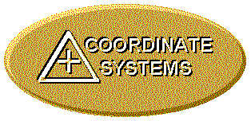

Coordinate Systems Overview
Table of Contents
Introduction
Basic Coordinate Systems
Reference Ellipsoids
Geodetic Datums
Coordinate Systems
Global Systems
Latitude, Longitude, Height
ECEF X, Y, Z
Universal Transverse Mercator (UTM)
Military Grid Reference System (MGRS)
World Geographic Reference System (GEOREF)
Local Systems
Universal Polar Stereographic (UPS)
National Grid Systems
British National Grid
Irish National Grid
State Plane Coordinates
Public Land Rectangular Surveys
Metes and Bounds
Miscellaneous Systems
Postal Codes
Maidenhead Grid Squares
AT&T V and H Coordinates
Navigation Systems
References